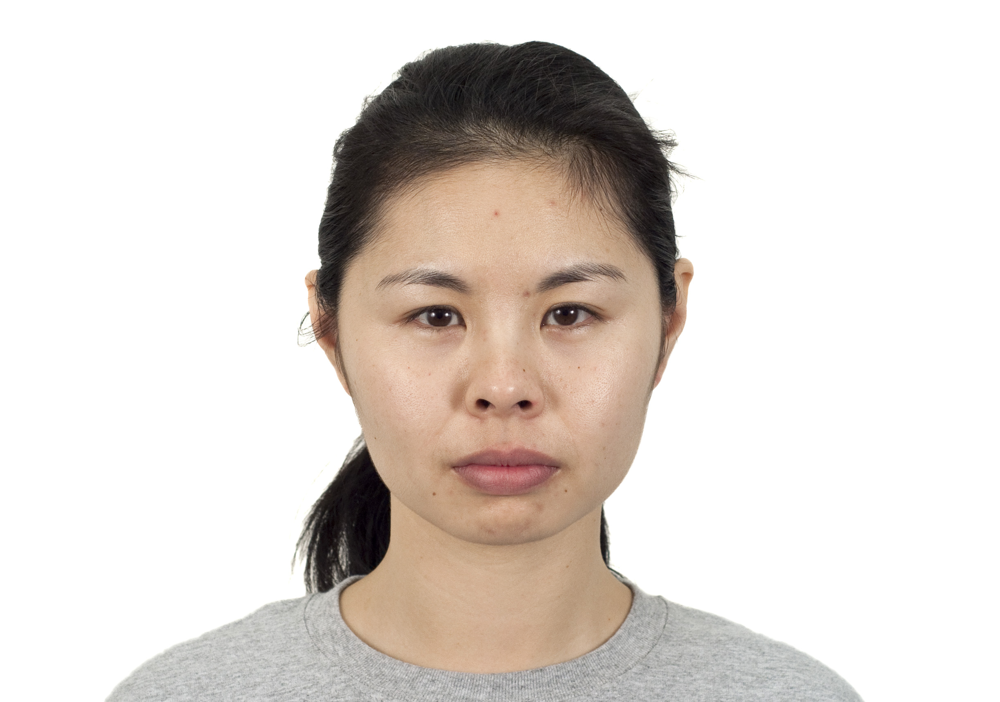
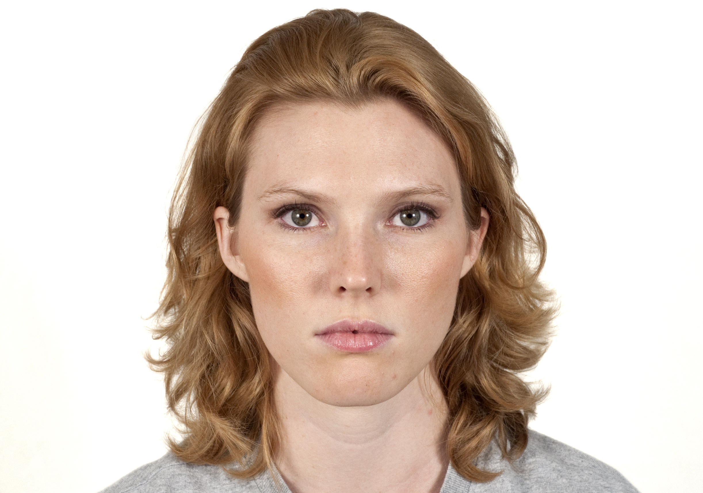
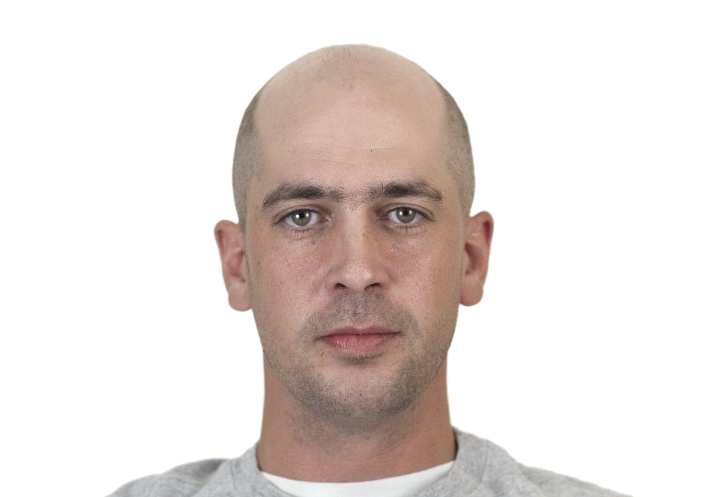
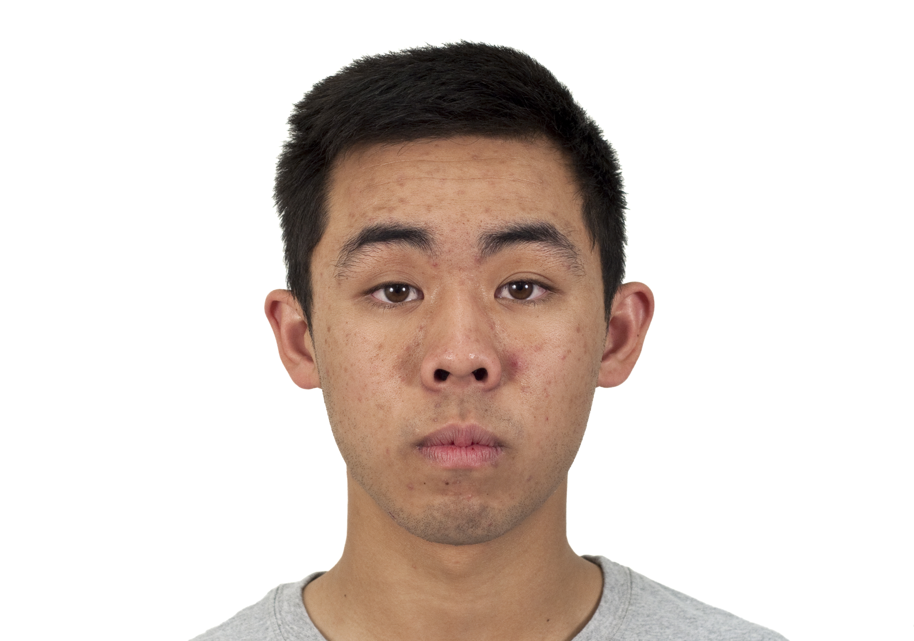
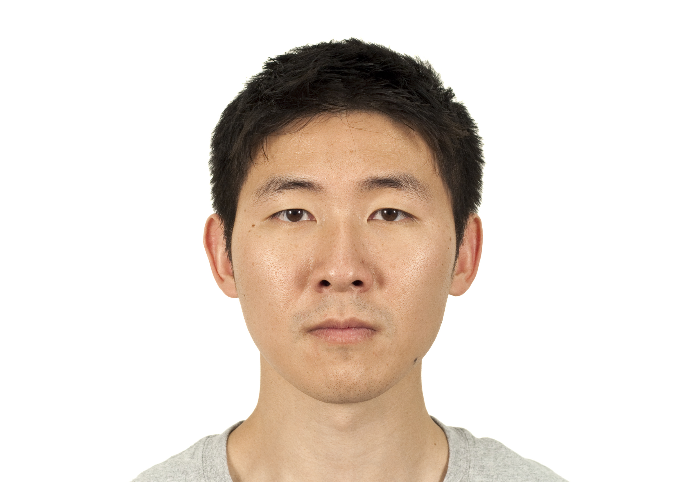
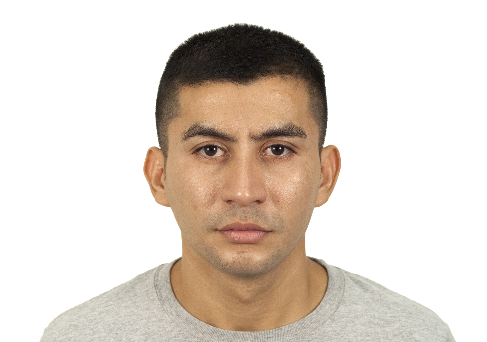

<!DOCTYPE html>
<html>
  <head>
    <head>

        <!-- jQuery -->
        <script src="jspsych/jspsych.js"></script>

        <!-- For local saving of the data in CSV format -->
        <script src="utils.js"></script>
    <style>
    .face-container {
      text-align: center;
    }

    .face-img {
      width: 300px;
      height: auto;
      display: block;
      margin: 0 auto;
    }

    .face-name {
      margin-top: 10px;
      font-size: 20px;
      font-weight: bold;
    }
    </style>
    <title>FNR</title>
    <script src="https://unpkg.com/jspsych@8.2.1"></script>
    <script src="https://unpkg.com/@jspsych/plugin-html-keyboard-response@2.1.0"></script>
    <script src="https://unpkg.com/@jspsych/plugin-image-keyboard-response@2.1.0"></script>
    <script src="https://unpkg.com/@jspsych/plugin-html-button-response@2.1.0"></script>
    <script src="https://unpkg.com/@jspsych/plugin-survey-html-form@2.1.0"></script>
    <script src="https://unpkg.com/@jspsych/plugin-fullscreen@2.1.0"></script>
    <script src="https://unpkg.com/@jspsych/plugin-survey-text@2.1.0"></script>
    <script src="https://unpkg.com/@jspsych/plugin-cloze@2.1.0"></script>
    <link href="https://unpkg.com/jspsych@8.2.1/css/jspsych.css" rel="stylesheet" type="text/css" />
  </head>
  <body></body>
  <script>


  /* initialize jsPsych */
var jsPsych = initJsPsych({
  override_safe_mode: true,
/*  extensions: [
    {type: jsPsychExtensionMouseTracking, params: {...}},
  ],
  */
  on_finish: function() {
    jsPsych.data.displayData();
  }
});

/* create timeline */
var timeline = [];

//Intro to full task


// TMT
// Intro and INSTRUCTIONS

// let pixel_unit

var w = window.innerWidth;
var h = window.innerHeight;

// Mouse coordinates (x , y)
let x = 0;
let y = 0;
isDrawing = false;

// To avoid scroll down when press space bar
window.onkeydown = function(e) {
return e.keyCode !== 32;
};

// disable scrolling page
function disableScroll() {
        // Get the current page scroll position
        scrollTop =
        window.pageYOffset || document.documentElement.scrollTop;
        scrollLeft =
        window.pageXOffset || document.documentElement.scrollLeft,

            // if any scroll is attempted,
            // set this to the previous value
            window.onscroll = function() {
                window.scrollTo(scrollLeft, scrollTop);
            };
    }


disableScroll();

//Shuffle using Fisher-Yates
function shuffle(array) {
        var currentIndex = array.length, temporaryValue, randomIndex;

        // While there remain elements to shuffle...
        while (0 !== currentIndex) {

            // Pick a remaining element...
            randomIndex = Math.floor(Math.random() * currentIndex);
            currentIndex -= 1;

            // And swap it with the current element.
            temporaryValue = array[currentIndex];
            array[currentIndex] = array[randomIndex];
            array[randomIndex] = temporaryValue;
        }

        return array;
    }


    // presentation time of the fixation cross
    var delayInMilliseconds = 1000; // it´s an indirect way to control the momento of presentation of images

    //For loading all images, but we'll present half

    images = [ "./stimuli/cond1/stim_2_B.jpg",  "./stimuli/cond1/stim_4_B.jpg",  "./stimuli/cond1/stim_6_B.jpg",  "./stimuli/cond1/stim_8_B.jpg",  "./stimuli/cond1/stim_10_B.jpg"];
    /*
              "./stimuli/cond1/stim_11_A.jpg", "./stimuli/cond1/stim_12_B.jpg", "./stimuli/cond1/stim_13_A.jpg", "./stimuli/cond1/stim_14_B.jpg", "./stimuli/cond1/stim_15_A.jpg",
              "./stimuli/cond1/stim_16_B.jpg", "./stimuli/cond1/stim_17_A.jpg", "./stimuli/cond1/stim_18_B.jpg", "./stimuli/cond1/stim_19_A.jpg", "./stimuli/cond1/stim_20_B.jpg",
              "./stimuli/cond2/stim_2_A.jpg", "./stimuli/cond2/stim_1_B.jpg", "./stimuli/cond2/stim_4_A.jpg", "./stimuli/cond2/stim_3_B.jpg", "./stimuli/cond2/stim_6_A.jpg",
              "./stimuli/cond2/stim_5_B.jpg", "./stimuli/cond2/stim_8_A.jpg", "./stimuli/cond2/stim_7_B.jpg", "./stimuli/cond2/stim_10_A.jpg","./stimuli/cond2/stim_9_B.jpg",
              "./stimuli/cond2/stim_12_A.jpg","./stimuli/cond2/stim_11_B.jpg","./stimuli/cond2/stim_14_A.jpg","./stimuli/cond2/stim_13_B.jpg","./stimuli/cond2/stim_16_A.jpg",
              "./stimuli/cond2/stim_15_B.jpg", "./stimuli/cond2/stim_18_A.jpg", "./stimuli/cond2/stim_17_B.jpg","./stimuli/cond2/stim_20_A.jpg", "./stimuli/cond2/stim_19_B.jpg"] */


var session1_TMTimages_all_shuffled = shuffle(images);
var session1_chosen_TMT_images = jsPsych.randomization.sampleWithoutReplacement (session1_TMTimages_all_shuffled, 2);
console.log(session1_chosen_TMT_images);


obj_type: 'image',
file: jsPsych.timelineVariable('fileName'),
startX: 'center',// image position
startY: 'center',
drawFunc: function (stimulus, canvas, context) { // 'This function enables to move objects horizontally and vertically'
    setTimeout(function () // putting a delay time to show the image

    {
        context.drawImage(stimulus.img, 0, 0, stimulus.img.width,  // Puede que aca este cambiando el tamanio del canvas
            stimulus.img.height, document.getElementById('myCanvas').width / 2 - 512, // This is a hard-coded way to put image in the center
            document.getElementById('myCanvas').height / 2 - 384,
            stimulus.img.width, stimulus.img.height);

    }, delayInMilliseconds);

}
}

//fixation cross
var extra_cross = {
obj_type: 'cross', // fixation
line_length: 20, // pixels
line_width: 4,

drawFunc: function(stimulus, canvas, context){
    canvas.addEventListener('mousedown', e => {
    // console.log('entro a mousedown');

x = e.offsetX;
y = e.offsetY;

isDrawing = true;
});

{

context.beginPath();
context.lineWidth = stimulus.line_width;
context.lineJoin = stimulus.lineJoin;
context.miterLimit = stimulus.miterLimit;
//
context.strokeStyle = 'white';
const x1 = stimulus.currentX;
const y1 = stimulus.currentY - stimulus.line_length/2;
const x2 = stimulus.currentX;
const y2 = stimulus.currentY + stimulus.line_length/2;
context.moveTo(x1, y1);
context.lineTo(x2, y2);
const x3 = stimulus.currentX - stimulus.line_length/2;
const y3 = stimulus.currentY;
const x4 = stimulus.currentX + stimulus.line_length/2;
const y4 = stimulus.currentY;
context.moveTo(x3, y3);
context.lineTo(x4, y4);
// ctx.closePath();
context.stroke();
}
}
};

// Resize trial with credit card firts measurement

//if it's bigger, the image displayed is bigger too
let pixel_factor = 0.75;

var resize_trial = {
  type: 'resize',
  item_width: 3 + 3/8, //Width of credit card in inches
  item_height: 2 + 1/8, //Heigth of credit card in inches
//   prompt: "<p>Click and drag the lower right corner of the box until the box is the same size as a credit card held up to the screen.</p>",
prompt: `<p style='font-size:120%;color:black'> Por favor coloque una tarjeta sobre la pantalla (puede ser crédito, débito, SUBE o cualquiera que tenga tamaño
            estándar 8.56 x 5.4 cm),<br> luego haga click sobre el recuadro rojo que se encuentra en la esquina inferior derecha
            hasta que sean del mismo tamaño que su tarjeta <br> Asegúrese de poner la tarjeta sobre la pantalla<br><br>
            Esto nos sirve para estimar el tamaño de su pantalla comparándolo con un objeto de tamaño conocido.</p>`,
//   pixels_per_unit: 642/4, // After the scaling factor is applied, this many pixels will equal one unit of measurement.
//   pixels_per_unit: pixel_unit, // After the scaling factor is applied, this many pixels will equal one unit of measurement.
  pixels_per_unit: (642/4)*pixel_factor, // After the scaling factor is applied, this many pixels will equal one unit of measurement.
  button_label: 'Continuar'
};

// TMT experimental trials
var trial = {
    timeline: [

        {
            type: 'psychophysics',
            stimuli: [

            extra_cross,
            showed_image,

                {
                    obj_type: 'image',
                    file: jsPsych.timelineVariable('fileNamxe'), // tngo que romper esto para que ande
                    //  show_start_time: 1000 // ms after the start of the trial //

                },

            ],
            response_type: 'mouse',
            background_color: 'white',

            //trial_duration: 61000, // after this amount of time, trial
            // canvas_height: 1850,
            // canvas_width: 2000,
            // prompt: 'Press any key to proceed.'
            data: {'file_name': jsPsych.timelineVariable('fileName')} // for identification
        }
    ],
    timeline_variables:

        timelineVariables,
        repetitions: 1,
        randomize_order: false //We randomize at top of script 'manually'
}


//                                       FACE FAMILIARIZATION (Just looking at them, no names or relationships yet)
/*Initial face study phase: the test begins with an exposure to all 16 faces. Subjects are shown 4 faces to a page, one face in each quadrant.
They are asked to look at each face for a total of 2 s until they have seen all 16 faces.*/


var facesonly_instructions = {
  type: jsPsychHtmlKeyboardResponse,
  stimulus:'In the following task, you will be shown pictures of 16 faces, 4 at a time.' +
  ' A red border will appear on one picture at a time, this indicates the picture you should focus on.' +
  ' You do not need to press any buttons in this task. When you are ready, please press the spacebar to begin.',
  choices: " ",
  post_trial_gap: 1000,
};

timeline.push(facesonly_instructions);

var allfaces = [
"faces\AllFaces\CFD-AF-231-357-N.jpg",  "faces/AllFaces\CFD-BF-209-172-N.jpg", "faces\AllFaces\CFD-WF-245-084-N.jpg",
"faces\AllFaces\CFD-LF-241-188-N.jpg", "faces\AllFaces\CFD-BF-009-002-N.jpg", "faces\AllFaces\CFD-AF-201-060-N.jpg",
 "faces\AllFaces\CFD-LF-238-154-N.jpg", "faces\AllFaces\CFD-BF-253-202-N.jpg",  "faces\AllFaces\CFD-AF-230-193-N.jpg",
 "faces\AllFaces\CFD-AF-236-145-N.jpg",  "faces\AllFaces\CFD-AF-214-139-N.jpg",  "faces\AllFaces\CFD-WF-205-006-N.jpg",
 "faces\AllFaces\CFD-AF-200-228-N.jpg",  "faces\AllFaces\CFD-AF-222-134-N.jpg",  "faces\AllFaces\CFD-BF-225-192-N.jpg",
 "faces\AllFaces\CFD-WF-213-031-N.jpg", "faces\AllFaces\CFD-WM-019-003-N.jpg",  "faces\AllFaces\CFD-LM-216-082-N.jpg",
 "faces\AllFaces\CFD-AM-246-184-N.jpg",  "faces\AllFaces\CFD-BM-011-016-N.jpg",  "faces\AllFaces\CFD-WM-029-023-N.jpg",
 "faces\AllFaces\CFD-WM-258-125-N.jpg",  "faces\AllFaces\CFD-AM-223-138-N.jpg",  "faces\AllFaces\CFD-AM-238-269-N.jpg",
 "faces\AllFaces\CFD-WM-023-001-N.jpg",  "faces\AllFaces\CFD-LM-237-264-N.jpg",  "faces\AllFaces\CFD-LM-232-204-N.jpg",
 "faces\AllFaces\CFD-WM-034-030-N.jpg",  "faces\AllFaces\CFD-LM-222-239-N.jpg",  "faces\AllFaces\CFD-AM-233-236-N.jpg",
 "faces\AllFaces\CFD-BM-029-024-N.jpg", "faces\AllFaces\CFD-BM-017-021-N.jpg",
];

// shuffle faces
var allfacesshuffled = jsPsych.randomization.shuffle(allfaces);
console.log('allfacesshuffled:', allfacesshuffled)

// split into 8 sets of 4
var facesonly_set1 = allfacesshuffled.slice(0, 4);
var facesonly_set2 = allfacesshuffled.slice(4, 8);
var facesonly_set3 = allfacesshuffled.slice(8, 12);
var facesonly_set4 = allfacesshuffled.slice(12, 16);
var facesonly_set5 = allfacesshuffled.slice(16, 20);
var facesonly_set6 = allfacesshuffled.slice(20, 24);
var facesonly_set7 = allfacesshuffled.slice(24, 28);
var facesonly_set8 = allfacesshuffled.slice(28, 32);


/*console.log("Set 1:", faces_set1);
console.log("Set 2:", faces_set2);
console.log("Set 3:", faces_set3);
console.log("Set 4:", faces_set4);*/

/*Display faces passively, four at a time. Indicator stays on each face for 2 secs before moving
onto the next face.*/

// border for images
function makeGridWithBorder(images, highlightIndex){

  return `
    <div style="
      display: grid;
      grid-template-columns: repeat(4, 1fr);
      gap: 20px;
      justify-items: center;
      align-items: center;
    ">
    ${images.map((f, i) => `
      
    `).join("")}
  </div>
  `;
}


var set1trial = {
  timeline: facesonly_set1.map((f, i) => ({
    type: jsPsychHtmlKeyboardResponse,
    stimulus: makeGridWithBorder(facesonly_set1, i),
    trial_duration: 2000,
    render_on_canvas: true,
    choices: "NO_KEYS"
  }))
};
timeline.push(set1trial);

var set2trial = {
  timeline: facesonly_set2.map((f, i) => ({
    type: jsPsychHtmlKeyboardResponse,
    stimulus: makeGridWithBorder(facesonly_set2, i),
    trial_duration: 2000,
    render_on_canvas: true,
    choices: "NO_KEYS"
  }))
};
timeline.push(set2trial);

var set3trial = {
  timeline: facesonly_set3.map((f, i) => ({
    type: jsPsychHtmlKeyboardResponse,
    stimulus: makeGridWithBorder(facesonly_set3, i),
    trial_duration: 2000,
    render_on_canvas: true,
    choices: "NO_KEYS"
  }))
};
timeline.push(set3trial);

var set4trial = {
  timeline: facesonly_set4.map((f, i) => ({
    type: jsPsychHtmlKeyboardResponse,
    stimulus: makeGridWithBorder(facesonly_set4, i),
    trial_duration: 2000,
    render_on_canvas: true,
    choices: "NO_KEYS"
  }))
};
timeline.push(set4trial);

var set5trial = {
timeline: facesonly_set5.map((f, i) => ({
  type: jsPsychHtmlKeyboardResponse,
  stimulus: makeGridWithBorder(facesonly_set5, i),
  trial_duration: 2000,
  render_on_canvas: true,
  choices: "NO_KEYS"
}))
};
timeline.push(set5trial);

var set6trial = {
timeline: facesonly_set6.map((f, i) => ({
  type: jsPsychHtmlKeyboardResponse,
  stimulus: makeGridWithBorder(facesonly_set6, i),
  trial_duration: 2000,
  render_on_canvas: true,
  choices: "NO_KEYS"
}))
};
timeline.push(set6trial);

var set7trial = {
timeline: facesonly_set7.map((f, i) => ({
  type: jsPsychHtmlKeyboardResponse,
  stimulus: makeGridWithBorder(facesonly_set7, i),
  trial_duration: 2000,
  render_on_canvas: true,
  choices: "NO_KEYS"
}))
};
timeline.push(set7trial);

var set8trial = {
timeline: facesonly_set8.map((f, i) => ({
  type: jsPsychHtmlKeyboardResponse,
  stimulus: makeGridWithBorder(facesonly_set8, i),
  trial_duration: 2000,
  render_on_canvas: true,
  choices: "NO_KEYS"
}))
};
timeline.push(set8trial);


/* Initial study of face-name pairs: subjects are then presented the same faces with names underneath
and asked to study the name that goes with the face. To ensure that the subject is
learning the face-name pairs, the examiner points to the face and asks the subject
to read the name associated with that face. After all 4 items are correctly identified;
another 4 face-name pairs are presented until all 16 face-name pairs are studied.
Subjects are given only one exposure to learn all 16 face-name pairs. */

var facenames_instructions = {
  type: jsPsychHtmlKeyboardResponse,
  stimulus:'<p> <strong> Well done! </strong><p>' +
  ' Your next task will involve learning the names of the people in the pictures you just saw.'+
  ' As before, a red border will appear on one picture at a time, this indicates the picture you should focus on.' +
  ' You do not need to press any buttons in this task. When you are ready, please press the spacebar to begin.',
  choices: " ",
  post_trial_gap: 1000,
};

timeline.push(facenames_instructions)


var facenamepairs = [
{stimulus: `<div class="face-container"><div class="face-name">Charlotte</div></div>`,},
{stimulus: `<div class="face-container"><div class="face-name">Hazel</div></div>`,},
{stimulus: `<div class="face-container"><div class="face-name">Amelia</div></div>`,},
{stimulus: `<div class="face-container"><div class="face-name">Emma</div></div>`,},
{stimulus: `<div class="face-container"><div class="face-name">Nova</div></div>`,},
{stimulus: `<div class="face-container"><div class="face-name">Victoria</div></div>`,},
{stimulus: `<div class="face-container"><div class="face-name">Lillian</div></div>`,},
{stimulus: `<div class="face-container"><div class="face-name">Sophie</div></div>`,},
{stimulus: `<div class="face-container"><div class="face-name">Mila</div></div>`,},
{stimulus: `<div class="face-container"><div class="face-name">Lucy</div></div>`,},
{stimulus: `<div class="face-container"><div class="face-name">Nora</div></div>`,},
{stimulus: `<div class="face-container"><div class="face-name">Riley</div></div>`,},
{stimulus: `<div class="face-container"><div class="face-name">Luna</div></div>`,},
{stimulus: `<div class="face-container"><div class="face-name">Ava</div></div>`,},
{stimulus: `<div class="face-container"><div class="face-name">Camila</div></div>`,},
{stimulus: `<div class="face-container"><div class="face-name">Violet</div></div>`,},
{stimulus: `<div class="face-container"><div class="face-name">Liam</div></div>`,},
{stimulus: `<div class="face-container"><div class="face-name">Carter</div></div>`,},
{stimulus: `<div class="face-container"><div class="face-name">Alexander</div></div>`,},
{stimulus: `<div class="face-container"><div class="face-name">Oliver</div></div>`,},
{stimulus: `<div class="face-container"><div class="face-name">Leo</div></div>`,},
{stimulus: `<div class="face-container"><div class="face-name">Nathan</div></div>`,},
{stimulus: `<div class="face-container"><div class="face-name">Roman</div></div>`,},
{stimulus: `<div class="face-container"><div class="face-name">Michael</div></div>`,},
{stimulus: `<div class="face-container"><div class="face-name">Grayson</div></div>`,},
{stimulus: `<div class="face-container"><div class="face-name">Samuel</div></div>`,},
{stimulus: `<div class="face-container"><div class="face-name">Daniel</div></div>`,},
{stimulus: `<div class="face-container"><div class="face-name">James</div></div>`,},
{stimulus: `<div class="face-container"><div class="face-name">Benjamin</div></div>`,},
{stimulus: `<div class="face-container"><div class="face-name">Cameron</div></div>`,},
{stimulus: `<div class="face-container"><div class="face-name">Dylan</div></div>`,},
{stimulus: `<div class="face-container"><div class="face-name">Gabriel</div></div>`,},
]

// shuffle face/names
var facenamepairs_shuffled = jsPsych.randomization.shuffle(facenamepairs);
console.log('facenamepairs_shuffled:', facenamepairs_shuffled)

// split into 16 sets of 4
var facenames_set1 = facenamepairs_shuffled.slice(0, 4);
var facenames_set2 = facenamepairs_shuffled.slice(4, 8);
var facenames_set3 = facenamepairs_shuffled.slice(8, 12);
var facenames_set4 = facenamepairs_shuffled.slice(12, 16);
var facenames_set5 = facenamepairs_shuffled.slice(16, 20);
var facenames_set6 = facenamepairs_shuffled.slice(20, 24);
var facenames_set7 = facenamepairs_shuffled.slice(24, 28);
var facenames_set8 = facenamepairs_shuffled.slice(28, 32);
var facenames_set9 = facenamepairs_shuffled.slice(32, 36);
var facenames_set10 = facenamepairs_shuffled.slice(36, 40);
var facenames_set11 = facenamepairs_shuffled.slice(40, 44);
var facenames_set12 = facenamepairs_shuffled.slice(44, 48);
var facenames_set13 = facenamepairs_shuffled.slice(48, 52);
var facenames_set14 = facenamepairs_shuffled.slice(52, 56);
var facenames_set15 = facenamepairs_shuffled.slice(56, 60);
var facenames_set16 = facenamepairs_shuffled.slice(60, 64);

function makeGridWithBorder_facenames(images, highlightIndex) {
  return `
    <div style="
      display: grid;
      grid-template-columns: repeat(4, 1fr);
      gap: 20px;
      justify-items: center;
      align-items: start;
    ">
      ${images.map((f, i) => `
        <div style="
          border: ${i === highlightIndex ? '5px solid red' : 'none'};
          border-radius: 10px;
          text-align: center;
        ">
          <div style="
            width:300px;
            height:400px;
            overflow:hidden;
            border-radius:10px;
          ">
            ${f.stimulus.replace(
              '
        </div>
      `).join('')}
    </div>
  `;
}

  /*150px);*/

  /*return `
    <div style="
      display: grid;
      grid-template-columns: repeat(4, 1fr);
      gap: 20px;
      justify-items: center;
      align-items: center;
    ">
    ${images.map((f, i) => `
      
           ${f.images}
                   </div>
    `).join("")}
  </div>
  `;
}*/

/*console.log("FaceNames Set 1:", facenames_set1);
console.log("FaceNames Set 2:", facenames_set2);
console.log("FaceNames Set 3:", facenames_set3);
console.log("FaceNames Set 4:", facenames_set4);*/


var facename_set1trial = {
  timeline: facenames_set1.map((f, i) => ({
    type: jsPsychHtmlKeyboardResponse,
    stimulus: makeGridWithBorder_facenames(facenames_set1, i),
    trial_duration: 2000,
    render_on_canvas: true,
    choices: "NO_KEYS"
  }))
};
timeline.push(facename_set1trial);

var facename_set2trial = {
  timeline: facenames_set2.map((f, i) => ({
    type: jsPsychHtmlKeyboardResponse,
    stimulus: makeGridWithBorder(facenames_set2, i),
    trial_duration: 2000,
    //render_on_canvas: true,
    choices: "NO_KEYS"
  }))
};
timeline.push(facename_set2trial);

var facename_set3trial = {
  timeline: facenames_set3.map((f, i) => ({
    type: jsPsychHtmlKeyboardResponse,
    stimulus: makeGridWithBorder(facenames_set3, i),
    trial_duration: 2000,
    //render_on_canvas: true,
    choices: "NO_KEYS"
  }))
};
timeline.push(facename_set3trial);

var facename_set4trial = {
  timeline: facenames_set4.map((f, i) => ({
    type: jsPsychHtmlKeyboardResponse,
    stimulus: makeGridWithBorder(facenames_set4, i),
    trial_duration: 2000,
    //render_on_canvas: true,
    choices: "NO_KEYS"
  }))
};
timeline.push(facename_set4trial);

var facename_set5trial = {
  timeline: facenames_set5.map((f, i) => ({
    type: jsPsychHtmlKeyboardResponse,
    stimulus: makeGridWithBorder(facenames_set5, i),
    trial_duration: 2000,
    //render_on_canvas: true,
    choices: "NO_KEYS"
  }))
};
timeline.push(facename_set5trial);

var facename_set6trial = {
  timeline: facenames_set6.map((f, i) => ({
    type: jsPsychHtmlKeyboardResponse,
    stimulus: makeGridWithBorder(facenames_set6, i),
    trial_duration: 2000,
    //render_on_canvas: true,
    choices: "NO_KEYS"
  }))
};
timeline.push(facename_set6trial);

var facename_set7trial = {
  timeline: facenames_set7.map((f, i) => ({
    type: jsPsychHtmlKeyboardResponse,
    stimulus: makeGridWithBorder(facenames_set7, i),
    trial_duration: 2000,
    //render_on_canvas: true,
    choices: "NO_KEYS"
  }))
};
timeline.push(facename_set7trial);

var facename_set8trial = {
  timeline: facenames_set8.map((f, i) => ({
    type: jsPsychHtmlKeyboardResponse,
    stimulus: makeGridWithBorder(facenames_set8, i),
    trial_duration: 2000,
    //render_on_canvas: true,
    choices: "NO_KEYS"
  }))
};
timeline.push(facename_set8trial);

var facename_set9trial = {
  timeline: facenames_set9.map((f, i) => ({
    type: jsPsychHtmlKeyboardResponse,
    stimulus: makeGridWithBorder(facenames_set9, i),
    trial_duration: 2000,
    //render_on_canvas: true,
    choices: "NO_KEYS"
  }))
};
timeline.push(facename_set9trial);

var facename_set10trial = {
  timeline: facenames_set10.map((f, i) => ({
    type: jsPsychHtmlKeyboardResponse,
    stimulus: makeGridWithBorder(facenames_set10, i),
    trial_duration: 2000,
    //render_on_canvas: true,
    choices: "NO_KEYS"
  }))
};
timeline.push(facename_set10trial);

var facename_set11trial = {
  timeline: facenames_set11.map((f, i) => ({
    type: jsPsychHtmlKeyboardResponse,
    stimulus: makeGridWithBorder(facenames_set11, i),
    trial_duration: 2000,
    //render_on_canvas: true,
    choices: "NO_KEYS"
  }))
};
timeline.push(facename_set11trial);

var facename_set12trial = {
  timeline: facenames_set12.map((f, i) => ({
    type: jsPsychHtmlKeyboardResponse,
    stimulus: makeGridWithBorder(facenames_set12, i),
    trial_duration: 2000,
  //  render_on_canvas: true,
    choices: "NO_KEYS"
  }))
};
timeline.push(facename_set12trial);

var facename_set13trial = {
  timeline: facenames_set13.map((f, i) => ({
    type: jsPsychHtmlKeyboardResponse,
    stimulus: makeGridWithBorder(facenames_set13, i),
    trial_duration: 2000,
    //render_on_canvas: true,
    choices: "NO_KEYS"
  }))
};
timeline.push(facename_set13trial);

var facename_set14trial = {
  timeline: facenames_set14.map((f, i) => ({
    type: jsPsychHtmlKeyboardResponse,
    stimulus: makeGridWithBorder(facenames_set14, i),
    trial_duration: 2000,
    //render_on_canvas: true,
    choices: "NO_KEYS"
  }))
};
timeline.push(facename_set14trial);

var facename_set15trial = {
  timeline: facenames_set15.map((f, i) => ({
    type: jsPsychHtmlKeyboardResponse,
    stimulus: makeGridWithBorder(facenames_set15, i),
    trial_duration: 2000,
    //render_on_canvas: true,
    choices: "NO_KEYS"
  }))
};
timeline.push(facename_set15trial);

var facename_set16trial = {
  timeline: facenames_set16.map((f, i) => ({
    type: jsPsychHtmlKeyboardResponse,
    stimulus: makeGridWithBorder(facenames_set16, i),
    trial_duration: 2000,
    //render_on_canvas: true,
    choices: "NO_KEYS"
  }))
};
timeline.push(facename_set16trial);

/*Initial recall of face-name pairs: the subjects are then shown the face and asked to recall the name
that goes with the face. The correct number of face-name pairs is recorded as an
initial learning score for names (ILN).*/
/* Followed Nathan's paper for this part. This is a training session to ensure they have learnt
the task before the recall - which will happen after one of the other tasks eg trial making or RT*/


var error_faces =[];


var facename_test_instructions = {
  type: jsPsychHtmlKeyboardResponse,
  stimulus:'<p> <strong> Well done! </strong><p>' +
  ' You will now be shown a picture of one of the faces you saw and asked to remember the name that goes with the face.'+
  ' Please type the name in the text box provided and click the "next" button when you are ready to move on to the next picture.' +
  ' Do not leave any responses blank, write a response even if you are unsure if it is correct.'+
  ' When you are ready, please press the spacebar to begin.',
  choices: " ",
  post_trial_gap: 1000,
};
timeline.push(facename_test_instructions);


let allfaces_withdata = [
  {text: `<p>Name: %Hazel%</p>`, correct_once: false},
  {text: `<p>Name: %Amelia%</p>`, correct_once: false},
  {text: `<p>Name: %Emma%</p>`, correct_once: false},
  {text: `<p>Name: %Nova%</p>`, correct_once: false},
  {text: `<p>Name: %Victoria%</p>`, correct_once: false},
  {text: `<p>Name: %Lillian%</p>`, correct_once: false},
  {text: `<p>Name: %Sophie%</p>`, correct_once: false},
  {text: `<p>Name: %Mila%</p>`, correct_once: false},
  {text: `<p>Name: %Lucy%</p>`, correct_once: false},
  {text: `<p>Name: %Nora%</p>`, correct_once: false},
  {text: `<p>Name: %Riley%</p>`, correct_once: false},
  {text: `<p>Name: %Luna%</p>`, correct_once: false},
  {text: `<p>Name: %Ava%</p>`, correct_once: false},
  {text: `<p>Name: %Camila%</p>`, correct_once: false},
  {text: `<p>Name: %Violet%</p>`, correct_once: false},
  {text: `<p>Name: %Liam%</p>`, correct_once: false},
  {text: `<p>Name: %Carter%</p>`, correct_once: false},
  {text: `<p>Name: %Alexander%</p>`, correct_once: false},
  {text: `<p>Name: %Oliver%</p>`, correct_once: false},
  {text: `<p>Name: %Leo%</p>`, correct_once: false},
  {text: `<p>Name: %Nathan%</p>`, correct_once: false},
  {text: `<p>Name: %Roman%</p>`, correct_once: false},
  {text: `<p>Name: %Michael%</p>`, correct_once: false},
  {text: `<p>Name: %Grayson%</p>`, correct_once: false},
  {text: `<p>Name: %Samuel%</p>`, correct_once: false},
  {text: `<p>Name: %Daniel%</p>`, correct_once: false},
  {text: `<p>Name: %James%</p>`, correct_once: false},
  {text: `<p>Name: %Benjamin%</p>`, correct_once: false},
  {text: `<p>Name: %Cameron%</p>`, correct_once: false},
  {text: `<p>Name: %Dylan%</p>`, correct_once: false},
  {text: `<p>Name: %Gabriel%</p>`, correct_once: false},
];

var allfaceswithdata_shuffled_fortest = jsPsych.randomization.shuffle(allfaces_withdata);

// --------------------
// 3. TRIAL
// --------------------
var face_trial = {
  type: jsPsychCloze,

  text: function(){
    return allfaceswithdata_shuffled_fortest[0].text; // always show next face
  },

  check_answers: true,
  button_text: 'Next',

  mistake_fn: function(){
    let correct_name =allfaceswithdata_shuffled_fortest[0].text.match(/%([^%]+)%/)[1].trim();
    alert(`Incorrect. The correct answer is ${correct_name}.`);
  },

  on_finish: function(data){

    let f = allfaceswithdata_shuffled_fortest.shift(); // remove current face

    if(data.correct){
      f.correct_once = true;
    } else {

      // reinsert at random future position
      let rand_index = Math.floor(Math.random() * allfaceswithdata_shuffled_fortest.length);

      allfaceswithdata_shuffled_fortest.splice(rand_index, 0, f);

    }

  }
};

// --------------------
// 4. LOOP UNTIL ALL CORRECT
// --------------------
var facename_test = {
  type: jsPsychCloze,
  timeline: [face_trial],

  loop_function: function(){

    // remove faces already learned
    face_queue = allfaceswithdata_shuffled_fortest.filter(f => !f.correct_once);

    console.log("Remaining:", allfaceswithdata_shuffled_fortest.length);

    return allfaceswithdata_shuffled_fortest.length > 0;

  }
};


timeline.push(facename_test);

// Insert a different task HERE

/* define instructions trial */
var instructions = {
  type: jsPsychHtmlKeyboardResponse,
  stimulus: `

    <p>In the following task a stop light will appear on the screen.</p>
    <p>If the light is <strong><font color="green"> GREEN </strong></font> press the <strong><font color="green"> P KEY </strong></font>
    with your <strong>right index finger</strong> as fast as you can. Think of this key as your gas pedal.</p>
<div style='width: 1000px;'>
    <div style='float: left;'></img></div>
    <div style='float: right;'></img></div>
</div>
    <p>If the light is <strong><font color="red"> RED</strong></font>, press the <strong><font color="red">Q KEY</strong></font>
    with your <strong>left index finger</strong> as fast as you can, think of this as your brake pedal.</p>
<div style='width: 1000px;'>
    <div style='float: left;'></img></div>
    <div style='float: right;'></img></div>
</div>
<div style='width: 1000px;'>
    <p>If the lights are <strong> OFF </strong>, do not press any keys.</p>
</div>
    <div style='float: center;'></img></div>
    <p> Let's have a practice run! When you are ready to start practicing, press the <strong>SPACEBAR.</strong></p>

  `,
  choices: " ",
  post_trial_gap: 1000
};
timeline.push(instructions);


var practice = {
    type: jsPsychImageKeyboardResponse,
    //post_trial_gap: 300,
    render_on_canvas: true,
    //response_ends_trial: true,
    timeline: [
      {stimulus:'RTStimuli/GreenLight.png', choices: ['p'], response_ends_trial: true, data: { test_part: 'practice', correct_response: 'p' }, },
      {stimulus:'RTStimuli/LightsOff.png', choices: "NO_KEYS", trial_duration: 500, data: { test_part: 'practice', correct_response:"NO_KEYS",choices: "NO_KEYS" }, },
      {stimulus:'RTStimuli/RedLight.png', choices: ['q'], response_ends_trial: true, data: { test_part: 'practice', correct_response: 'q' }, },
      {stimulus:'RTStimuli/LightsOff.png', choices: "NO_KEYS", trial_duration: 500, data: { test_part: 'practice', correct_response:"NO_KEYS", choices: "NO_KEYS" }, },
      {stimulus:'RTStimuli/GreenLight.png',  choices: ['p'], response_ends_trial: true, data: { test_part: 'practice', correct_response: 'p' }, },
      {stimulus:'RTStimuli/LightsOff.png', choices: "NO_KEYS", trial_duration: 500, data: { test_part: 'practice', correct_response:"NO_KEYS", choices: "NO_KEYS" }, },
      {stimulus:'RTStimuli/RedLight.png', choices: ['q'], response_ends_trial: true, data: { test_part: 'practice', correct_response: 'q' }, },
],
};
timeline.push(practice);

var instructions_2 = {
  type: jsPsychHtmlKeyboardResponse,
  stimulus: `
    <p></strong> Well done! </p></strong>
    <p>You are now ready to move on to the task. It will be the same as the practice task but longer.</p>
    <p>When you are ready to start the task, press the <strong>SPACEBAR.</strong></p>
  `,
  choices: " ",
  post_trial_gap: 1000
};
timeline.push(instructions_2);

var test_stimuli = [
    {stimulus: "RTStimuli/GreenLight.png", choices: ['p', 'q'], correct_response: 'p', data: {task: 'response_green'},}, /*, correct_response: jsPsych.timelineVariable('correct_response')},},*/
    {stimulus: "RTStimuli/RedLight.png",  choices: ['p', 'q'], correct_response: 'q', data: {task: 'response_red'},}, /*correct_response: jsPsych.timelineVariable('correct_response')},},*/
    {stimulus: 'RTStimuli/LightsOff.png', choices: "NO_KEYS", correct_response: "NO_KEYS", data: {task: 'response_light_off'},},
    {stimulus: "RTStimuli/GreenLight.png", choices: ['p', 'q'], correct_response: 'p', data: {task: 'response_green'},}, /*, correct_response: jsPsych.timelineVariable('correct_response')},},*/
    {stimulus: "RTStimuli/RedLight.png",  choices: ['p', 'q'], correct_response: 'q', data: {task: 'response_red'},},
];

var flat_test_stimuli = test_stimuli.flat();

/*
var light_off = {
  type: jsPsychImageKeyboardResponse,
  stimulus: 'RTStimuli/LightsOff.png',
  choices: "NO_KEYS",
  trial_duration: function(){
    return jsPsych.randomization.sampleWithoutReplacement([250, 500, 750, 1000, 1250, 1500, 1750, 2000], 1)[0];
  },
  data: {
    task: 'light_off'
  }
};
var lights_on = {
  type: jsPsychImageKeyboardResponse,
  stimulus: jsPsych.timelineVariable('stimulus'),
  choices: ['p', 'q'],
  data: {
    task: 'response',
    correct_response: jsPsych.timelineVariable('correct_response')
  },
  on_finish: function(data){
    data.correct = jsPsych.pluginAPI.compareKeys(data.response, data.correct_response);
  }
}
*/
/* define test procedure */
var RT_Task = {
  type: jsPsychImageKeyboardResponse,
  timeline: [
    {stimulus: "RTStimuli/GreenLight.png", choices: ['p', 'q'], correct_response: 'p', data: {task: 'response_green'},}, /*, correct_response: jsPsych.timelineVariable('correct_response')},},*/
    {stimulus: "RTStimuli/RedLight.png",  choices: ['p', 'q'], correct_response: 'q', data: {task: 'response_red'},}, /*correct_response: jsPsych.timelineVariable('correct_response')},},*/
    {stimulus: 'RTStimuli/LightsOff.png', choices: "NO_KEYS", correct_response: "NO_KEYS", data: {task: 'response_light_off'},},
    {stimulus: "RTStimuli/GreenLight.png", choices: ['p', 'q'], correct_response: 'p', data: {task: 'response_green'},}, /*, correct_response: jsPsych.timelineVariable('correct_response')},},*/
    {stimulus: "RTStimuli/RedLight.png",  choices: ['p', 'q'], correct_response: 'q', data: {task: 'response_red'},},
  ],
  timeline_variables: test_stimuli,
  repetitions: 16,
  randomize_order: true,
};
timeline.push(RT_Task);

// face name pairs test (baseline meansure)

var allfaceswithdata_shuffled_fortest2 = jsPsych.randomization.shuffle(allfaces_withdata);

var facename_baselinetest = {
  type: jsPsychCloze,

  text: function(){
    let current = allfaceswithdata_shuffled_fortest2[0];
    let correct_name = current.text.match(/%([^%]+)%/)[1].trim();
    let first_letter = correct_name.charAt(0);

    return `
      ${current.text}
      <button id="hint-btn">Hint</button>
      <p id="hint-text" style="display:none; font-size:18px;">
        First letter: ${first_letter}
      </p>
    `;
  },

  on_load: function(){
    document.getElementById("hint-btn").addEventListener("click", function(){
      document.getElementById("hint-text").style.display = "block";
    });
  },

  check_answers: true,
  button_text: 'Next',

  mistake_fn: function(){
    let correct_name = allfaceswithdata_shuffled_fortest2[0].text.match(/%([^%]+)%/)[1].trim();
    alert(`Incorrect. The correct answer is ${correct_name}.`);
  },

  on_finish: function(data){
    let f = allfaceswithdata_shuffled_fortest2.shift();

    if(data.correct){
      f.correct_once = true;
    } else {
      let rand_index = Math.floor(Math.random() * allfaceswithdata_shuffled_fortest2.length);
      allfaceswithdata_shuffled_fortest2.splice(rand_index, 0, f);
    }
  }
};

timeline.push(facename_baselinetest);
/*var facename_baselinetest = {
  timeline: allfaceswithdata_shuffled_fortest2.map((f, i) => {

    let correct_name = f.text.match(/%([^%]+)%/)[1].trim();

    return {
      type: jsPsychCloze,
      text: f.text,
      check_answers: true,
      button_text: 'Next'
    };

  })
};
*/
//DEBRIEF
var debrief = {
  type : jsPsychHtmlButtonResponse,
  stimulus: "<p><strong> You Are Now Done! <p><strong>"+
  "<p><strong> Thank You for Taking the Time to Complete These Tasks <p><strong>"+
  "<p> You are now ready may now click the button below to finish this part of the study. "+
  "<p><strong> please Remember to Complete Part II in 12 hours. <p><strong>"+
  "We will send you a reminder via Prolific, but please be ready to start the task as close to 12 hours from now as possible. <p>",
  choices: ['Done!'],
  };
timeline.push(debrief);


jsPsych.run(timeline)
console.log('timeline:', timeline),
initJsPsych({
  timeline: timeline,
  preload_images: allfaces, /*["faces/AllFaces/CFD-AF-200-228-N.jpg", "faces/AllFaces/CFD-AF-236-145-N.jpg", "faces/AllFaces/CFD-AM-223-138-N.jpg", "faces/AllFaces/CFD-BF-225-192-N.jpg", "faces/AllFaces/CFD-BM-019-002-N.jpg",
  "faces/AllFaces/CFD-BM-044-001-N.jpg", "faces/AllFaces/CFD-LF-219-223-N.jpg", "faces/AllFaces/CFD-LF-241-188-N.jpg", "faces/AllFaces/CFD-LM-251-073-N.jpg", "faces/AllFaces/CFD-WF-245-084-N.jpg",
  "faces/AllFaces/CFD-WM-023-001-N.jpg", "faces/AllFaces/CFD-WM-258-125-N.jpg"],*/
  use_webaudio: false,
  show_progress_bar: true,
  on_finish: function(){
    jsPsych.data.displayData();
      // Make sure that participant id is the first response (thats what values[0] gets)
    ptc_id = JSON.parse(jsPsych.data.get().select('responses').values[0])['participant id'];
    saveData("SWELDERS_FNR_Session1_" + ptc_id + '_'+ Date.now().toString(), jsPsych.data.get().csv());},

  });


  </script>
</html>
